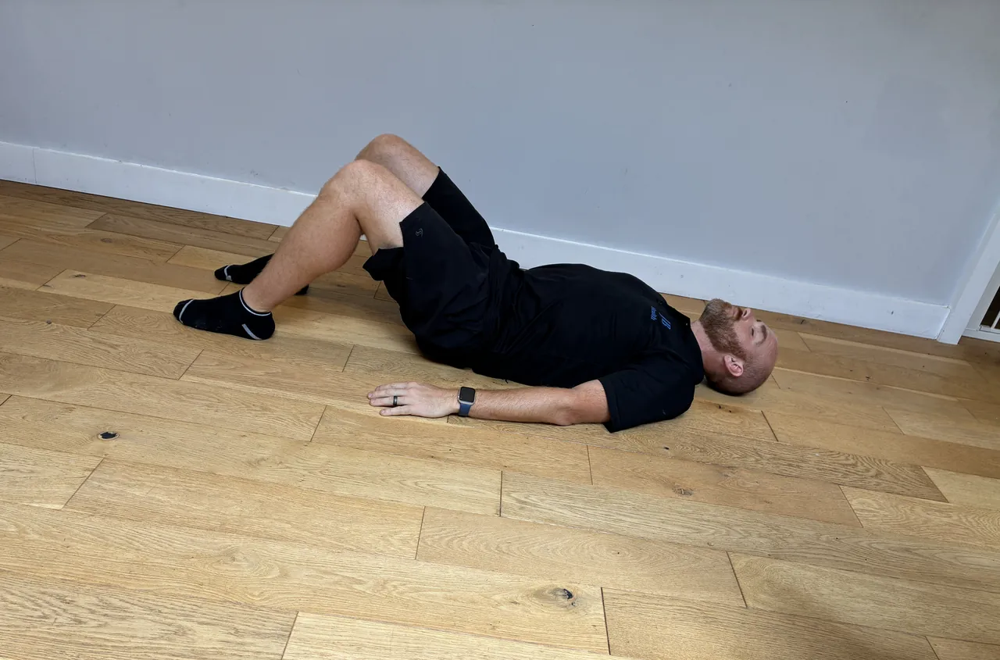
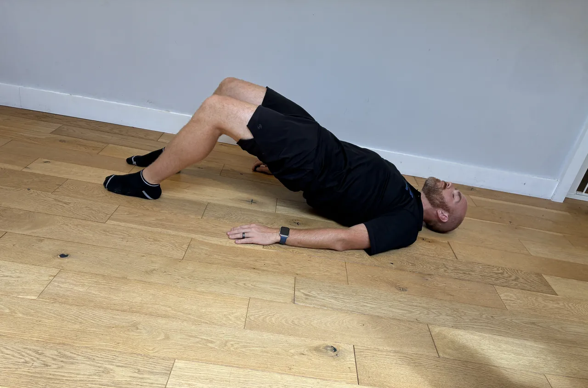

Start: Sit or stand with the arm hanging loose and the shoulder fully relaxed. The muscle has to be slack for this to reach anything, so let the weight go out of the arm before starting.
Movement: Work the gun slowly across the top of the shoulder, around the inside edge of the shoulder blade and into the upper back, pausing on tender spots for twenty to thirty seconds until they let go. Two or three spots each side.
Focus: Pressure you can breathe through, never pain. Stay on the muscle across the top of the shoulder and around the blade, off the bony spine of the blade itself and off the front and side of the neck. If anything goes sharp, electric or numb down the arm, come off that spot immediately.
Start: Stand in front of a box at about knee height holding a light weight at the chest, feet hip to shoulder-width, toes slightly out.
Movement: Sit the hips back and down to lightly touch the box, then stand tall through the heels, keeping the weight at the chest.
Focus: Keep the knees tracking over the toes and the chest up. Sit back under control rather than dropping onto the box, and drive up through the heels.
Start: Stand tall, feet hip-width, holding a weight in front of your thighs, or hands empty, with a soft bend in the knees. Set the shoulders back and brace the core.
Movement: Push the hips back and slide the weight down the front of your legs, keeping it close, until you feel a stretch in the hamstrings. Drive the hips forward to stand tall.
Focus: Keep the back flat throughout, never let it round. The movement is a hip hinge, not a squat, and the weight stays close to your legs. Only go as low as you can keep the back flat.
Start: Sit in the leg press with one foot centred on the platform, the other resting aside, hips and back settled, core braced.
Movement: Lower the platform under control on the one leg to a comfortable bend, then press back up without locking the knee hard.
Focus: Keep the working knee tracking in line with the toes, never caving in, and the hip flat on the pad. Control the depth to what the knee allows and keep the safety catches set.
Start: Lie on a bench, a weight in each hand at chest height, elbows a little below shoulder line, shoulder blades set back, feet planted.
Movement: Press the the weights up until the arms are nearly straight, then lower under control to a comfortable stretch.
Focus: Keep the shoulder blades set back on the bench and the elbows tucked to about 45 degrees, not flared wide, to protect the shoulders. Control the lower rather than dropping.
Start: Stand side-on to a low cable with a cuff on the outer ankle, holding a support, torso tall.
Movement: Take the working leg out to the side against the cable, keeping it straight, then return under control.
Focus: Keep the leg straight and the hips level, not leaning to lift. Keep the torso tall, control the return, and feel the outer hip work.
Start: Stand tall, feet hip-width, balls of the feet on the floor or the edge of a step, holding a support for balance.
Movement: Rise up onto the toes as high as you comfortably can, then lower the heels slowly under control.
Focus: Rise and lower slowly and evenly, not bouncing, through the full comfortable range. Keep the ankles tracking straight, not rolling out, and control the lower.


Start: Lie on your back, knees bent, feet flat and hip-width apart, close enough that your fingertips brush your heels.
Movement: Drive through your heels and push your hips towards the ceiling until knees, hips and shoulders form a straight line. Squeeze the glutes, hold two seconds, then lower slowly.
Focus: Lift with the glutes, not by arching the lower back. Keep the ribs down and the core braced. Stop at a straight line, don't push on into the back.
Start: Sit or stand with the arm hanging loose and the shoulder fully relaxed. The muscle has to be slack for this to reach anything, so let the weight go out of the arm before starting.
Movement: Work the gun slowly across the top of the shoulder, around the inside edge of the shoulder blade and into the upper back, pausing on tender spots for twenty to thirty seconds until they let go. Two or three spots each side.
Focus: Pressure you can breathe through, never pain. Stay on the muscle across the top of the shoulder and around the blade, off the bony spine of the blade itself and off the front and side of the neck. If anything goes sharp, electric or numb down the arm, come off that spot immediately.
Start: Hold the TRX handles, lean back with arms extended, body in a straight line, heels down, core braced.
Movement: Pull your chest towards the handles by driving the elbows back, then lower under control to arms straight.
Focus: Lead with the elbows and squeeze the shoulder blades, keeping the body in one straight line. Don't let the hips sag, keep the shoulders down, and control the lower.
Start: Sit at the machine, thighs under the pads, hands on the bar wider than shoulders, arms extended up, chest up.
Movement: Pull the bar down towards the upper chest by driving the elbows down, then return it up slowly under control.
Focus: Lead with the elbows and squeeze the shoulder blades down, not shrugging up. Keep the chest up and avoid leaning back to heave the bar, and control the return.
Start: Sit at the low cable, a single handle in one hand, feet braced, arm extended, chest up, back tall.
Movement: Pull the handle to the side of the abdomen, driving the elbow back, then return slowly under control.
Focus: Lead with the elbow and squeeze the shoulder blade, keeping the torso square rather than rotating to pull. Keep the back tall and the shoulder down.
Start: Hinge forward with a flat back, a light dumbbell in one hand hanging below the chest, elbow softly bent, other hand supporting.
Movement: Raise the arm out to the side to shoulder height, squeezing the shoulder blade, then lower under control.
Focus: Keep a soft elbow bend and lead with the back of the hand, squeezing the shoulder blade. Keep the back flat and don't swing or shrug, using a light weight.
Start: Stand facing a high cable, arms extended up and forward on the bar, chest up, ribs down, core braced.
Movement: With straight arms, pull the bar down towards the thighs in an arc, then return slowly under control.
Focus: Keep the arms straight and drive from the lats, not bending the elbows. Keep the ribs down, don't lean back to help, and control the return.
Start: Stand at a cable or band at head height, a rope or handles in hand, arms extended forward, ribs down, core braced.
Movement: Pull towards the face, drawing the hands to the sides of the head with the elbows high, then return under control.
Focus: Lead with the elbows high and squeeze the shoulder blades, not shrugging up. Keep the ribs down and the torso still, and control the return.
Start: Lie on a bench holding a single dumbbell over the chest with both hands, arms fairly straight, ribs down, feet planted.
Movement: Lower the weight back overhead in an arc to a comfortable shoulder stretch, then pull it back over the chest.
Focus: Keep the ribs down and don't arch the lower back as the arms go overhead. Keep the arms fairly straight, go only to a comfortable stretch, and control the arc.
Start: Stand facing a high cable, arms extended up and forward on the bar, chest up, ribs down, core braced.
Movement: With straight arms, pull the bar down towards the thighs in an arc, then return slowly under control.
Focus: Keep the arms straight and drive from the lats, not bending the elbows. Keep the ribs down, don't lean back to help, and control the return.
Start: Stand side-on to a band at elbow height, elbow pinned to the side and bent to 90 degrees, forearm across the body.
Movement: Rotate the forearm outward, opening away from the body, keeping the elbow pinned, then return under control.
Focus: Keep the elbow glued to the side and move only the forearm, not the whole arm. Keep the shoulder down and the ribs still, and control the return.
Start: Hinge forward with a flat back, a light dumbbell in one hand hanging below the chest, elbow softly bent, other hand supporting.
Movement: Raise the arm out to the side to shoulder height, squeezing the shoulder blade, then lower under control.
Focus: Keep a soft elbow bend and lead with the back of the hand, squeezing the shoulder blade. Keep the back flat and don't swing or shrug, using a light weight.
Start: Stand tall, a weight at one shoulder, feet hip-width, ribs down, core braced against the offset load.
Movement: Press the weight overhead until the arm is straight, then lower back to the shoulder under control.
Focus: Keep the ribs down and resist leaning away from the weight, keeping the torso upright. Keep the shoulder down away from the ear, and press within a comfortable range.
Start: Sit or stand with the arm hanging loose and the shoulder fully relaxed. The muscle has to be slack for this to reach anything, so let the weight go out of the arm before starting.
Movement: Work the gun slowly across the top of the shoulder, around the inside edge of the shoulder blade and into the upper back, pausing on tender spots for twenty to thirty seconds until they let go. Two or three spots each side.
Focus: Pressure you can breathe through, never pain. Stay on the muscle across the top of the shoulder and around the blade, off the bony spine of the blade itself and off the front and side of the neck. If anything goes sharp, electric or numb down the arm, come off that spot immediately.
Start: Hold the TRX handles, lean back with arms extended, body in a straight line, heels down, core braced.
Movement: Pull your chest towards the handles by driving the elbows back, then lower under control to arms straight.
Focus: Lead with the elbows and squeeze the shoulder blades, keeping the body in one straight line. Don't let the hips sag, keep the shoulders down, and control the lower.
Start: Sit at the machine, thighs under the pads, hands on the bar wider than shoulders, arms extended up, chest up.
Movement: Pull the bar down towards the upper chest by driving the elbows down, then return it up slowly under control.
Focus: Lead with the elbows and squeeze the shoulder blades down, not shrugging up. Keep the chest up and avoid leaning back to heave the bar, and control the return.
Start: Sit at the low cable, a single handle in one hand, feet braced, arm extended, chest up, back tall.
Movement: Pull the handle to the side of the abdomen, driving the elbow back, then return slowly under control.
Focus: Lead with the elbow and squeeze the shoulder blade, keeping the torso square rather than rotating to pull. Keep the back tall and the shoulder down.
Start: Hinge forward with a flat back, a light dumbbell in one hand hanging below the chest, elbow softly bent, other hand supporting.
Movement: Raise the arm out to the side to shoulder height, squeezing the shoulder blade, then lower under control.
Focus: Keep a soft elbow bend and lead with the back of the hand, squeezing the shoulder blade. Keep the back flat and don't swing or shrug, using a light weight.
Start: Stand facing a high cable, arms extended up and forward on the bar, chest up, ribs down, core braced.
Movement: With straight arms, pull the bar down towards the thighs in an arc, then return slowly under control.
Focus: Keep the arms straight and drive from the lats, not bending the elbows. Keep the ribs down, don't lean back to help, and control the return.
Start: Stand at a cable or band at head height, a rope or handles in hand, arms extended forward, ribs down, core braced.
Movement: Pull towards the face, drawing the hands to the sides of the head with the elbows high, then return under control.
Focus: Lead with the elbows high and squeeze the shoulder blades, not shrugging up. Keep the ribs down and the torso still, and control the return.
Start: Stand in front of a box at about parallel height holding a weight at the chest, feet shoulder-width, toes slightly out.
Movement: Sit the hips back and down to lightly touch the box, then drive up through the heels to stand tall, keeping the weight at the chest.
Focus: Keep the knees tracking over the toes and the heels down. Touch the box under control rather than dropping, and keep the chest up and the weight close throughout.
Start: Stand at a chest-height cable, a handle in each hand at the chest, staggered stance, shoulder blades set, core braced.
Movement: Press the handles forward together until the arms are nearly straight, then return under control to the chest.
Focus: Keep the shoulder blades set and the ribs down, not arching to press. Keep the elbows a little below shoulder height, and control the return.
Start: Stand facing a high cable, arms extended up and forward on the bar, chest up, ribs down, core braced.
Movement: With straight arms, pull the bar down towards the thighs in an arc, then return slowly under control.
Focus: Keep the arms straight and drive from the lats, not bending the elbows. Keep the ribs down, don't lean back to help, and control the return.
Start: Sit at the machine, the outer thighs against the pads, back supported, feet on the rests.
Movement: Push the thighs apart against the pads, then return slowly under control.
Focus: Push apart smoothly and control the return, not letting the pads snap the legs together. Keep the back settled and the movement steady, feeling the outer hips.
Start: Sit at the machine, shins behind the pad, knees at the pivot, thighs supported, holding the handles.
Movement: Straighten the knees to raise the pad, then lower slowly under control.
Focus: Raise and lower under control, never kicking or snapping the knees straight. Keep the range comfortable and pain-free, and pause briefly at the top rather than locking hard.
Start: Stand on one leg, torso tall, other foot lifted, arms ready to reach.
Movement: Reach the arms (and torso if set) out to the sides or forward, challenging balance, then return to centre.
Focus: Keep the hips level and the standing knee soft as you reach, moving slowly. Fix the eyes on a point, keep the core engaged, and return under control.
Start: Stand on one foot, the ball of the foot on a step edge, a weight in the hand, holding a support with the other.
Movement: Rise up onto the toes as high as you comfortably can, then lower the heel slowly under control.
Focus: Rise and lower slowly and evenly, not bouncing, through the full comfortable range. Keep the ankle tracking straight, not rolling out, and control the lower.
Start: On all fours, hands under shoulders, knees under hips, back flat and neutral, core braced.
Movement: Reach the opposite arm and leg out straight until level with the body, hold briefly, then return under control and swap.
Focus: Keep the hips and shoulders square to the floor and the back flat, resisting any twist or sag as the limbs extend. Move slowly, and reach only as far as you keep the neutral spine.
Start: Lie on your back, knees bent up over the hips, hands by the sides or under the lower back, ribs down.
Movement: Curl the knees towards the chest by lifting the hips slightly off the floor, then lower under control.
Focus: Curl using the lower abdomen to lift the hips, not swinging the legs. Keep the movement small and controlled, and don't let the lower back arch as you lower.
Start: Lie on a bench holding a single dumbbell over the chest with both hands, arms fairly straight, ribs down, feet planted.
Movement: Lower the dumbbell back overhead in an arc to a comfortable shoulder stretch, then pull it back over the chest.
Focus: Keep the ribs down and don't arch the lower back as the arms go overhead. Keep the arms fairly straight, go only to a comfortable stretch, and control the arc.
Start: Hinge forward with a flat back, a light dumbbell in one hand hanging below the chest, elbow softly bent, other hand supporting.
Movement: Raise the arm out to the side to shoulder height, squeezing the shoulder blade, then lower under control.
Focus: Keep a soft elbow bend and lead with the back of the hand, squeezing the shoulder blade. Keep the back flat and don't swing or shrug, using a light weight.
Start: Set the hip pad just below your hip bones. Feet secure, body straight, hands crossed on the chest.
Movement: Lower under control by hinging at the hips, then raise back to a straight line, both legs working together.
Focus: Stop level with the body, don't over-arch into the lower back. Squeeze the glutes and hamstrings to lift, keeping the neck long.
Start: Hold the end of a landmine bar at one shoulder, standing tall or half kneeling, ribs down, core braced.
Movement: Press the bar up and slightly forward along its arc until the arm is straight, then lower back to the shoulder under control.
Focus: Keep the ribs down and the core braced so the lower back doesn't arch. Keep the shoulder down away from the ear, and follow the bar's arc rather than forcing it straight up.
Start: Kneel or sit facing a high cable, a handle in both hands, arms extended up and forward, chest up, core braced.
Movement: Pull the handle down and back towards the ribs, driving the elbows down and back, then return under control.
Focus: Lead with the elbows and squeeze the shoulder blades down, not shrugging. Keep the chest up and the torso still, and control the return.
Start: Stand a stride in front of a bench with the top of the back foot on it, torso tall, arms for balance.
Movement: Lower by bending the front knee until the thigh is towards parallel, then hold that bottom position still for the set time.
Focus: Keep the front knee over the foot, not caving in, and the weight through the front leg. Keep the torso tall through the hold, and hold only at a depth the front knee tolerates.
Start: Stand side-on to a low cable with a cuff on the outer ankle, holding a support, torso tall.
Movement: Take the working leg out to the side against the cable, keeping it straight, then return under control.
Focus: Keep the leg straight and the hips level, not leaning to lift. Keep the torso tall, control the return, and feel the outer hip work.
Start: Set your forearms on the floor shoulder-width, elbows under the shoulders, legs extended back, toes tucked under.
Movement: Lift the hips to form a straight line from head to heels and hold that position for the set time, breathing steadily.
Focus: Keep a straight line, hips neither sagging down nor piking up, and the core and glutes braced. Keep the ribs down and the neck long, and stop when the line breaks rather than pushing through a drooping back.
Start: Stand in front of a box at about knee height holding a light weight at the chest, feet hip to shoulder-width, toes slightly out.
Movement: Sit the hips back and down to lightly touch the box, then stand tall through the heels, keeping the weight at the chest.
Focus: Keep the knees tracking over the toes and the chest up. Sit back under control rather than dropping onto the box, and drive up through the heels.
Start: Stand at a chest-height cable, a handle in each hand at the chest, staggered stance, core braced hard.
Movement: Press the handles forward together until the arms are nearly straight, resisting the pull, then return under control.
Focus: Keep the torso square and still, resisting the cable's pull to rotate you. Keep the shoulder blades set and the ribs down, and control the press and return.
Start: Sit at the low cable, feet braced, a close handle in both hands, arms extended, chest up, back tall.
Movement: Pull the handle to the lower abdomen, driving the elbows back close to the body, then return slowly under control.
Focus: Drive the elbows back and squeeze the shoulder blades, not just bending the arms. Keep the back tall and still, no rocking, and keep the shoulders down.
Start: Stand on one leg, torso tall, the other leg ready to travel back, standing knee soft, arms ready.
Movement: Hinge forward from the hip, letting the free leg travel back and the arms lower, then return to standing.
Focus: Hinge from the hip with a flat back, keeping the hips level and not opening out. Keep the standing knee soft, move slowly, and control the return.
Start: Stand tall, feet hip-width, balls of the feet on the floor or the edge of a step, holding a support for balance.
Movement: Rise up onto the toes as high as you comfortably can, then lower the heels slowly under control.
Focus: Rise and lower slowly and evenly, not bouncing, through the full comfortable range. Keep the ankles tracking straight, not rolling out, and control the lower.
Start: Lie on your back holding a band or light weight up over the chest, knees bent over the hips, back pressed into the floor.
Movement: Lower the opposite arm and leg slowly while holding the resistance steady above you, keeping the back flat, then swap.
Focus: Keep the lower back pressed to the floor throughout, and the resistance held still and steady. Move slowly, and reduce the reach if the back begins to arch.
Start: Lie on your back, knees bent up over the hips, hands by the sides or under the lower back, ribs down.
Movement: Curl the knees towards the chest by lifting the hips slightly off the floor, then lower under control.
Focus: Curl using the lower abdomen to lift the hips, not swinging the legs. Keep the movement small and controlled, and don't let the lower back arch as you lower.
Start: Stand with a cuff or band low around one ankle attached to a side cable, feet together, torso tall.
Movement: Step the working leg out to the side against the resistance, then step it back under control.
Focus: Keep the torso tall and the hips level, stepping from the outer hip, not leaning. Keep the steps controlled, and the working knee soft.
Start: Face away from a low cable, rope between your legs, feet shoulder-width. Step forward to take the tension, hands holding the rope, soft knees.
Movement: Push the hips back and let the rope draw between your legs with a flat back, then drive the hips forward to stand tall and squeeze the glutes.
Focus: Drive the movement from the hips, not the arms, the arms just hold the rope. Keep the back flat, and finish standing tall without leaning back or arching.
Start: Hold weights at the sides or a weight at the chest in a split stance, torso tall.
Movement: Lower straight down until both knees are bent towards right angles and hold that bottom position still for the set time.
Focus: Keep the front knee over the foot, not caving in, and the torso upright through the hold. Keep the weight balanced between both legs, and hold only at a depth the knees tolerate.
Start: Sit at the machine with a close neutral-grip handle, thighs secured, arms extended, chest up.
Movement: Pull the handle to the upper chest, driving the elbows down close to the body, then return slowly under control.
Focus: Lead with the elbows and draw the shoulder blades down and back, not shrugging. Keep the chest up and the torso still, and control the return.
Start: Hold the end of a landmine bar at one shoulder, standing tall, ribs down, core braced against the offset.
Movement: Press the bar up and slightly forward along its arc until the arm is straight, then lower to the shoulder under control.
Focus: Keep the ribs down and resist twisting towards the bar, staying square. Keep the shoulder down away from the ear, and follow the bar's arc rather than forcing it up.
Start: Stand on one leg holding a kettlebell, the other leg ready to travel back, torso tall, standing knee soft.
Movement: Hinge forward from the hip, letting the free leg travel back as the kettlebell lowers, then return to standing.
Focus: Hinge from the hip with a flat back, not rounding, and keep the hips level, not opening out. Keep the standing knee soft, move slowly, and control the return.
Start: Sit on the floor with the working leg straight out in front. Loop a resistance band around the ball of the foot and anchor the other end on something solid ahead of you, or hold it with both hands, so the band pulls the foot away from you.
Movement: Pull the toes and the front of the foot back towards the shin against the band, then let the band draw the foot slowly back out under control.
Focus: The front of the shin should be doing all the work, so keep the knee still and move only at the ankle. The slow return matters as much as the pull. Do each foot on its own so a weaker side cannot hide, and start with a light band, since this muscle tires fast. Loaded progression from anterior tibialis toe raises: once bodyweight raises are easy, this is where the strength comes from.
Start: Stand in front of a box or chair at about knee height, feet hip to shoulder-width, toes slightly out.
Movement: Push the hips back and sit down to lightly touch the box, then stand tall by driving through the heels. Control the descent throughout.
Focus: Keep the knees tracking over the toes and the chest up. Sit back onto the box under control rather than dropping, and drive up through the heels.
Start: Stand at a chest-height cable, a handle in each hand at the chest, staggered stance, shoulder blades set, core braced.
Movement: Press the handles forward together until the arms are nearly straight, then return under control to the chest.
Focus: Keep the shoulder blades set and the ribs down, not arching to press. Keep the elbows a little below shoulder height, and control the return.
Start: Stand at a low cable, a handle in both hands, arms extended, chest up, staggered stance, core braced.
Movement: Pull the handle towards the abdomen, driving the elbows back, then return under control.
Focus: Lead with the elbows and squeeze the shoulder blades, keeping the torso still rather than leaning back to pull. Keep the ribs down and the shoulders down.
Start: Stand side-on to a low cable with a cuff on the outer ankle, holding a support, torso tall.
Movement: Take the working leg out to the side against the cable, keeping it straight, then return under control.
Focus: Keep the leg straight and the hips level, not leaning to lift. Keep the torso tall, control the return, and feel the outer hip work.
Start: Stand on one leg, torso tall, the other knee ready to drive up, arms ready.
Movement: Drive the free knee up towards hip height, hold the balance briefly, then lower under control and repeat.
Focus: Keep the hips level and the standing knee soft, staying tall as the knee drives up. Fix the eyes on a point, control the drive and lower, and keep the core engaged.
Start: Stand tall, balls of the feet on the floor or a step edge, holding a support for balance.
Movement: Rise up onto the toes, then lower the heels slowly over three to four seconds under control.
Focus: Rise smoothly and control the slow lower, feeling the calf lengthen, not dropping. Keep the ankles tracking straight, and stay in a comfortable range.
Start: Lie on your back, one knee bent, one leg straight, hands under the lower back, elbows down.
Movement: Slowly lift the head and shoulders just slightly, hold, then lower slowly under control.
Focus: Keep the lower back in its natural arch and brace, lifting only slightly and slowly. Keep the neck neutral, don't pull the chin in, and control every phase.
Start: Face the anchor holding the handles lightly at chest height, feet hip to shoulder-width, arms fairly straight.
Movement: Sit the hips back and down into a squat, using the straps only for light balance, then drive up to stand tall.
Focus: Keep the knees tracking over the toes and the heels down. Use the straps for balance, not to pull yourself up, and go only as deep as your knees stay comfortable.
Start: Stand tall holding a kettlebell in front of the thighs with both hands, feet hip-width, soft knees, core braced.
Movement: Push the hips back and lower the bell down the front of the legs, keeping it close, until the hamstrings stretch, then drive the hips forward to stand.
Focus: Keep the back flat and the bell close throughout. Hinge at the hips, not the waist, and only lower as far as the flat back allows.
Start: Step into a lunge position, front foot flat, back heel raised, torso tall.
Movement: Lower to a mid-range lunge, knees part way bent, and hold that position still for the set time.
Focus: Keep the front knee over the ankle and tracking over the foot, and the chest tall. Hold steady without sinking or rising, and keep the depth to where the knees stay comfortable.
Start: Stand at a high cable to one side, a handle in both hands up and across, chest up, core braced.
Movement: Pull the handle down and across the body towards the opposite hip, then return under control.
Focus: Lead with the elbow and let the twist come from the upper back, keeping the hips fairly square. Keep the ribs down, the core braced, and control the return.
Start: Sit tall, dumbbells held in front at shoulder height, palms facing you, elbows down, ribs down.
Movement: Press overhead while rotating the palms to face forward, straightening the arms, then reverse the rotation as you lower back down.
Focus: Keep the ribs down and the lower back neutral through the press and rotation. Keep the shoulders down, control the twist, and stay within a comfortable shoulder range.
Start: Lie on your back, one knee bent with the foot flat, the other leg extended straight out and held off the floor.
Movement: Drive through the heel of the bent leg to push your hips up until the body is level. Hold two seconds, then lower slowly under control.
Focus: Keep the hips level, don't let the free side drop or twist. Push with the glute, not the lower back, and keep the ribs down.
Start: Half kneel or stand with one foot forward, flat on the floor, toes pointing straight ahead.
Movement: Gently drive the knee forward over the toes, keeping the heel down, to a comfortable stretch at the front of the ankle, then return.
Focus: Keep the heel firmly down and let the knee travel over the toes only to a comfortable range. Move slowly, keep the foot pointing straight, and don't force the stretch.
Start: Stand side-on to a cable at chest height, handle in both hands, arms extended, feet planted, core braced.
Movement: Rotate the torso away from the cable, turning through the trunk, then return under control.
Focus: Turn through the upper trunk and let the hips pivot with the feet, not twisting the lower back or knees. Keep the arms fairly still, ribs down, and control the return.
Start: Stand in front of a high box or chair, feet hip to shoulder-width, toes slightly out.
Movement: Push the hips back and sit down to lightly touch the box, then stand tall by driving through the heels. Control the descent, don't flop onto the box.
Focus: Keep the knees tracking over the toes and the chest up as you sit back. Touch the box under control rather than dropping, and drive up through the heels, not the toes.
Start: Stand tall, feet hip-width, holding the weight in front of your thighs with a soft bend in the knees. Set the shoulders back and brace the core.
Movement: Push the hips back and slide the weight down the front of your legs, keeping it close, until you feel a stretch in the hamstrings. Drive the hips forward to stand tall.
Focus: Keep the back flat throughout, never let it round. The movement is a hip hinge, not a squat, and the weight stays close to your legs. Only go as low as you can keep the back flat.
Start: Stand tall, feet hip-width, arms ready to help drive.
Movement: Step one foot back into a reverse lunge, then drive back up and bring that knee up in front to hip height, balancing briefly, before stepping back again.
Focus: Keep the front knee over the ankle in the lunge and the hips level on the knee raise. Control the balance at the top, and drive through the standing heel rather than swinging up.
Start: Stand tall holding a band in front at shoulder height with straight arms, elbows softly bent, ribs down.
Movement: Pull the band apart out to the sides, squeezing the shoulder blades, then return under control.
Focus: Squeeze the shoulder blades together and keep the shoulders down, not shrugging. Keep a soft elbow bend and the ribs down, and control the return.
Start: Sit tall on a bench with back support, a dumbbell in each hand at shoulder height, elbows under the wrists, ribs down.
Movement: Press the dumbbells overhead until the arms are straight, then lower them back to shoulder height under control.
Focus: Keep the ribs down and the back against the support, not arching to press. Keep the shoulders down away from the ears, and lower under control to a comfortable shoulder range.
Start: Stand on one leg, torso tall, the other leg ready to travel back, standing knee soft, arms ready.
Movement: Hinge forward from the hip, letting the free leg travel back and the arms lower, then return to standing.
Focus: Hinge from the hip with a flat back, keeping the hips level and not opening out. Keep the standing knee soft, move slowly, and control the return.
Start: On all fours, back flat and neutral, core braced, ready to extend the opposite arm and leg.
Movement: Reach the opposite arm and leg out level with the body, then pulse them through a small range while holding the position, before swapping.
Focus: Keep the hips and shoulders square and the back flat through every pulse, resisting the twist. Keep the pulses small and controlled, and stop if the back starts to sag or rotate.
Start: Sit in the leg press, feet flat and hip to shoulder-width on the platform, hips and back settled into the pad, core braced.
Movement: Lower the platform under control until the knees reach a comfortable bend, then press back up through the whole foot without locking out hard.
Focus: Keep the knees tracking in line with the toes, never caving in, and the hips flat against the pad. Control the depth to what the knees allow, and don't slam the knees straight at the top.
Start: Stand with the kettlebell between your feet, feet hip to shoulder-width. Push the hips back and hinge to take the handle with both hands, back flat, chest up, shoulders over the bell.
Movement: Drive through the floor and stand tall, pushing the hips forward and squeezing the glutes at the top. Hinge the hips back to lower the bell under control.
Focus: Keep the back flat from start to finish, never rounded. The power comes from the hips and legs, not the lower back or arms. Keep the bell close to your body on the way up and down.
Start: Lie on a bench, a dumbbell in each hand at chest height, elbows a little below shoulder line, shoulder blades set back, feet planted.
Movement: Press the dumbbells up until the arms are nearly straight, then lower under control to a comfortable stretch.
Focus: Keep the shoulder blades set back on the bench and the elbows tucked to about 45 degrees, not flared wide, to protect the shoulders. Control the lower rather than dropping.
Start: On all fours, hands under shoulders, knees under hips, back flat and neutral, core braced.
Movement: Reach the opposite arm and leg out straight until level with the body, hold briefly, then return under control and swap.
Focus: Keep the hips and shoulders square to the floor and the back flat, resisting any twist or sag as the limbs extend. Move slowly, and reach only as far as you keep the neutral spine.
Start: Lie on your side, hips and knees bent, feet together, hips stacked, a band around the thighs if used.
Movement: Keeping the feet together, open the top knee up like a clam, then lower under control.
Focus: Open only as far as the hips stay stacked, not rolling the top hip back. Keep the movement slow, and feel the outer hip and glute work.
Start: Stand tall holding a plate in both hands at the thighs, arms straight, ribs down, core braced.
Movement: Raise the plate forward and up to about shoulder height with straight arms, then lower under control.
Focus: Lead with straight arms and keep the shoulders down, not shrugging, raising only to shoulder height. Keep the ribs down and don't lean back, and control the lower.
Start: Hinge forward with a flat back, a light dumbbell in one hand hanging below the chest, elbow softly bent, other hand supporting.
Movement: Raise the arm out to the side to shoulder height, squeezing the shoulder blade, then lower under control.
Focus: Keep a soft elbow bend and lead with the back of the hand, squeezing the shoulder blade. Keep the back flat and don't swing or shrug, using a light weight.
Start: Stand a stride in front of a bench, the top of your back foot resting on it, torso tall, arms for balance.
Movement: Lower straight down by bending the front knee until the thigh is towards parallel, then drive up through the front heel to the start.
Focus: Keep the front knee tracking over the foot, not caving in, and most of the weight through the front leg. Keep the torso tall, control the descent, and go only as deep as the front knee stays comfortable.
Start: Upper back against a bench, a kettlebell resting across the front of the hips, feet flat and hip-width, chin tucked, core braced.
Movement: Drive through the heels to push the hips up to a straight line, squeeze the glutes at the top, hold briefly, then lower with control.
Focus: Finish at a straight line with the glutes, not by arching the back. Keep the ribs down and the chin tucked, and keep the bell steady across the hips.
Start: Sit tall, dumbbells held in front at shoulder height, palms facing you, elbows down, ribs down.
Movement: Press overhead while rotating the palms to face forward, straightening the arms, then reverse the rotation as you lower back down.
Focus: Keep the ribs down and the lower back neutral through the press and rotation. Keep the shoulders down, control the twist, and stay within a comfortable shoulder range.
Start: Hinge forward with a flat back holding a barbell at arms' length, chest up, core braced, hips back.
Movement: Pull the bar towards the hips, driving the elbows back, then lower under control while holding the hinge.
Focus: Keep the back flat and the hinge steady throughout, not rising or rounding as you row. Lead with the elbows, squeeze the shoulder blades, and keep the shoulders down.
Start: Stand holding the end of a landmine bar in both hands at chest height, arms extended, feet planted, core braced.
Movement: Sweep the bar down and across from one side to the other in an arc, rotating through the trunk, then reverse.
Focus: Turn through the trunk with the hips pivoting and the feet allowed to turn, not twisting the lower back or knees. Keep the ribs down, and control the arc.
Start: Stand with a band around the legs, feet hip-width, knees softly bent, slight squat, torso tall.
Movement: Step diagonally forward and outward alternately, keeping tension on the band, for the set steps.
Focus: Keep tension on the band and the knees driving out, not caving. Stay low and controlled, and feel the outer hips working each step.
Start: Stand on one foot, the ball of the foot on a step edge, a weight in the hand, holding a support with the other.
Movement: Rise up onto the toes as high as you comfortably can, then lower the heel slowly under control.
Focus: Rise and lower slowly and evenly, not bouncing, through the full comfortable range. Keep the ankle tracking straight, not rolling out, and control the lower.
Start: Stand on a balance board, knees soft, torso tall, ready for small nudges or self-generated wobbles, near a support.
Movement: Keep the board steady while introducing or absorbing small perturbations, recovering balance each time.
Focus: React from the ankles and keep the knees soft and hips level, recovering smoothly. Stay tall, keep the core engaged, and keep support within reach.
Start: Stand in front of a box at about parallel height holding a weight at the chest, feet shoulder-width, toes slightly out.
Movement: Sit the hips back and down to lightly touch the box, then drive up through the heels to stand tall, keeping the weight at the chest.
Focus: Keep the knees tracking over the toes and the heels down. Touch the box under control rather than dropping, and keep the chest up and the weight close throughout.
Start: Stand tall holding a kettlebell in front of the thighs with both hands, feet hip-width, soft knees, core braced.
Movement: Push the hips back and lower the bell down the front of the legs, keeping it close, until the hamstrings stretch, then drive the hips forward to stand.
Focus: Keep the back flat and the bell close throughout. Hinge at the hips, not the waist, and only lower as far as the flat back allows.
Start: Lie on an incline bench, a dumbbell in each hand at upper-chest height, shoulder blades set back, feet planted.
Movement: Press the dumbbells up until the arms are nearly straight, then lower under control to a comfortable stretch.
Focus: Keep the shoulder blades set on the bench and the elbows at about 45 degrees, not flared wide. Keep the ribs down, and control the lower to a comfortable shoulder range.
Start: Straddle or stand beside a landmine bar, hinge with a flat back, one hand on the bar end, arm extended, core braced.
Movement: Pull the bar towards the hip, driving the elbow back, then lower under control.
Focus: Keep the back flat and the hips still, leading with the elbow and squeezing the shoulder blade. Don't round or twist to lift, and control the lower.
Start: Lie on your back, knees bent, feet flat and hip-width, a weight or bar resting across the front of your hips, held gently in place.
Movement: Drive through the heels and push the hips up until the body is in a straight line, squeeze the glutes hard, hold, then lower with control.
Focus: Lift with the glutes, not by arching the back. Keep the ribs down and the core braced. Stop at a straight line rather than pushing into the lower back.
Start: Stand tall, feet together or hip-width, arms ready, near a support, then close the eyes.
Movement: Hold the balance with the eyes closed for the set time, staying steady.
Focus: Stand tall and make small ankle adjustments to stay steady without sight. Keep the core gently engaged, breathe, and keep a support within reach.
Start: Lie on your back, knees bent up over the hips, arms reaching towards the ceiling, lower back gently pressed into the floor.
Movement: Lower one arm slowly overhead towards the floor, keeping the back flat, then return and swap arms.
Focus: Keep the lower back pressed to the floor throughout, this is the whole point. Move slowly, and if the back starts to arch, reduce the reach.
Start: Stand side-on to a cable or band at chest height, feet shoulder-width, hands holding the handle at the chest, core braced.
Movement: Press the handle straight out in front of you, resisting the pull that wants to rotate you, hold briefly, then draw it back.
Focus: Keep the hips and shoulders square, letting nothing rotate you towards the cable, this is the whole exercise. Keep the ribs down and the core braced, and press smoothly rather than snatching.
Start: Stand in a split stance, one foot forward and one back, weight balanced, torso tall, hands at the chest.
Movement: Lower straight down until both knees are bent towards right angles and hold that bottom position still for the set time.
Focus: Keep the front knee tracking over the foot, not caving in, and the torso upright through the hold. Keep the weight balanced between both legs, and hold only at a depth the knees tolerate.
Start: Lie on your side, legs straight and stacked, hips square, head supported, a band around the thighs if used.
Movement: Raise the top leg up to the side, keeping it straight and in line with the body, then lower under control.
Focus: Keep the leg in line with the body and the hips stacked, not rolling back. Lead with the heel, keep it slow, and feel the outer hip.
Start: Hinge forward with a flat back, a light dumbbell in one hand hanging below the chest, elbow softly bent, other hand supporting.
Movement: Raise the arm out to the side to shoulder height, squeezing the shoulder blade, then lower under control.
Focus: Keep a soft elbow bend and lead with the back of the hand, squeezing the shoulder blade. Keep the back flat and don't swing or shrug, using a light weight.
Start: Stand with your back, head and arms against a wall, feet a few centimetres out so the lower back stays flat, elbows bent to 90 degrees in a goalpost.
Movement: Slide the arms slowly up towards overhead keeping every point of contact, then slide back down under control.
Focus: Keep the whole back and both arms on the wall throughout. The moment the lower back arches or the hands lift away is your limit, so work just short of it, and breathe steadily.
Start: Stand on one foot, the ball of the foot on the floor or a step edge, holding a support for balance.
Movement: Rise up onto the toes as high as you comfortably can, then lower the heel slowly under control.
Focus: Rise and lower slowly and evenly, not bouncing, through the full comfortable range. Keep the ankle tracking straight, not rolling out, and control the lower.
Start: Lie on your back, one knee bent with the foot flat, the other leg straight, hands under the lower back, elbows down.
Movement: Lift the head and shoulders just slightly off the floor, keeping the neck neutral, hold briefly, then lower under control.
Focus: Keep the lower back in its natural arch and lift only slightly, bracing the core rather than crunching. Keep the neck neutral and don't pull the chin to the chest.
Start: Stand on a balance board with both feet, knees soft, torso tall, near a support.
Movement: Keep the board level and steady, making constant small adjustments, for the set time.
Focus: Keep the knees soft and the hips level, adjusting from the ankles to keep the board steady. Fix the eyes on a point, keep the core engaged, and keep support within reach.
Start: Sit on the floor with one leg bent in front at 90 degrees and the other out to the side at 90 degrees, sitting tall.
Movement: Flow the knees from side to side, rotating through both hips, pausing where you feel a gentle stretch, then continuing.
Focus: Move from the hips with the torso tall, easing into each side rather than forcing. Use the hands for support, and stay within a comfortable, pain-free range.